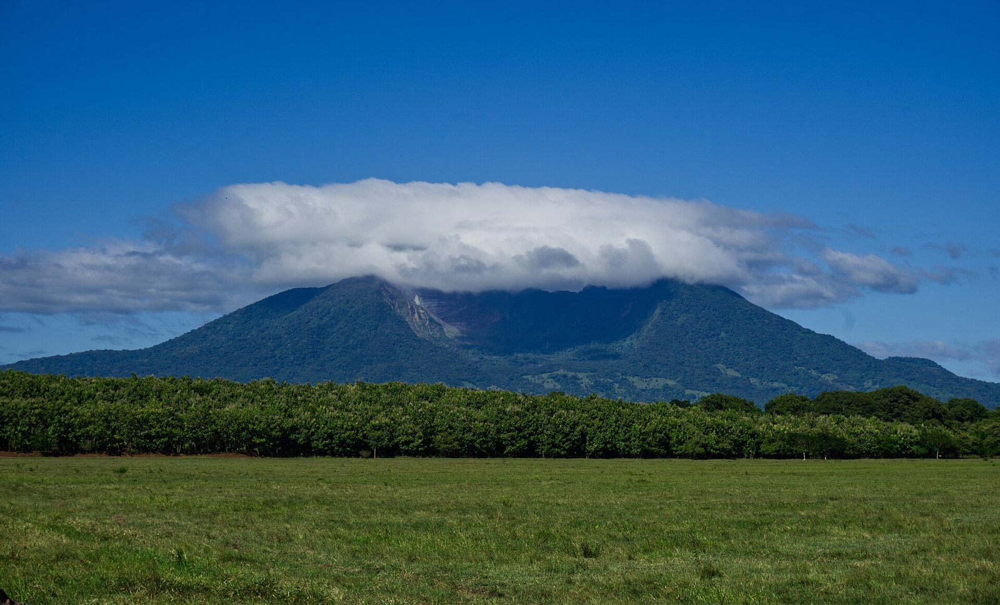
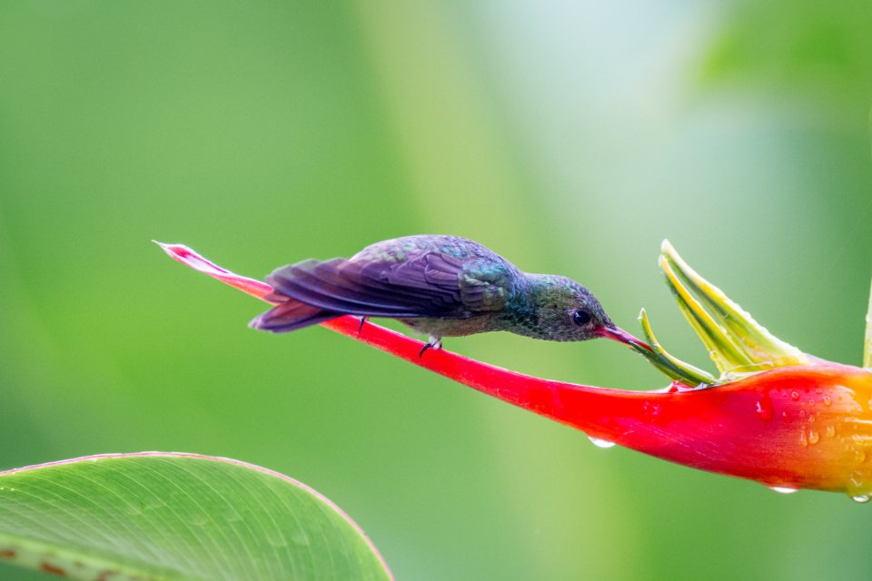
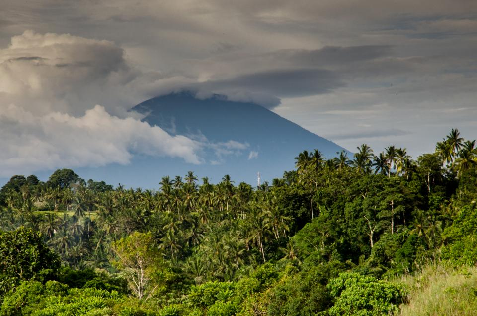
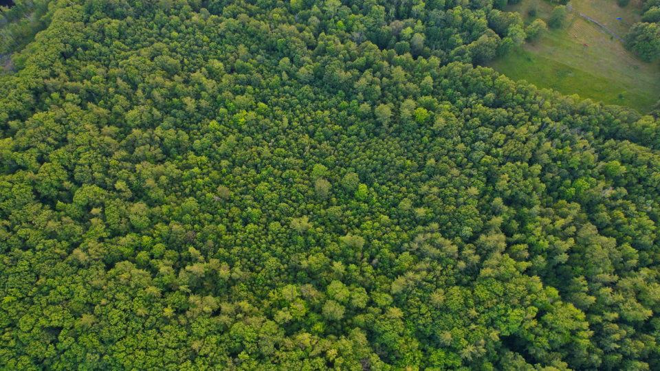
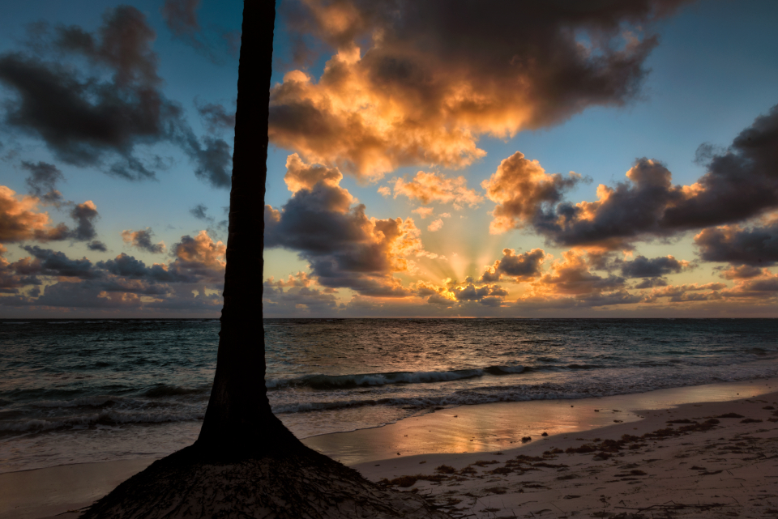
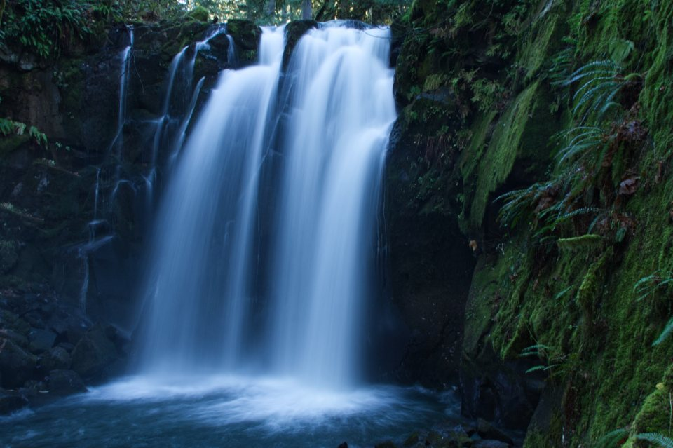
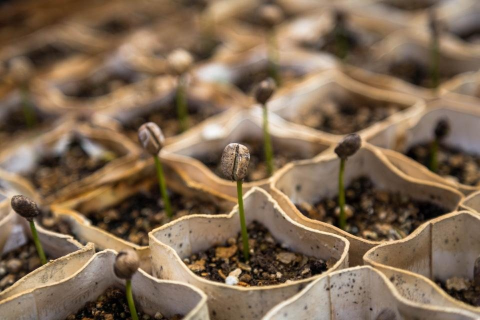
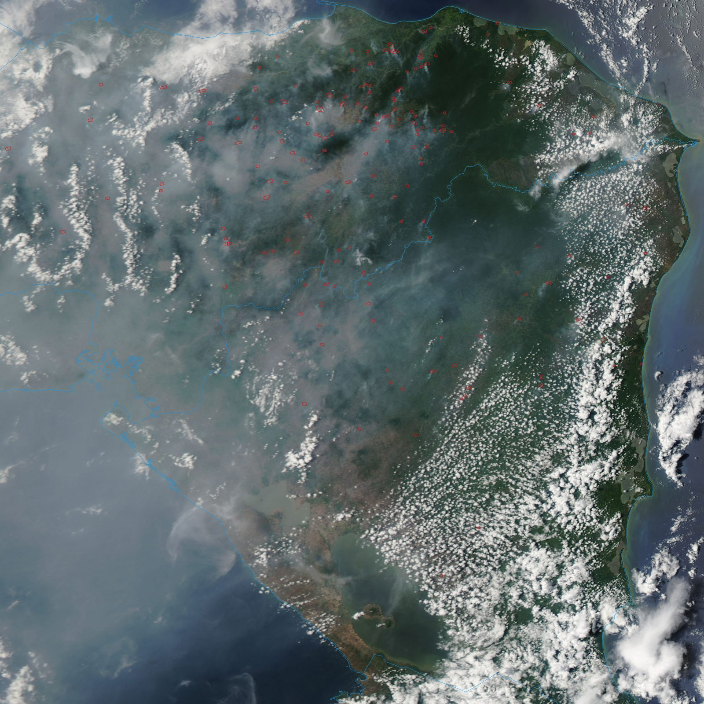

1997
Bosawás
Con cerca de 20.000 km², es la segunda selva tropical del hemisferio occidental, solo por detrás de la Amazonía. Protege territorios mayangna y miskitu en la RAAN.

Sostenibilidad
Biodiversidad, educación ambiental y desarrollo sostenible: información general con una mirada juvenil sobre el entorno que heredamos.
Introducción
La protección del medioambiente forma parte de las conversaciones que atraviesan a las nuevas generaciones: los recursos naturales, el clima y las formas de vida más sostenibles condicionan el presente de Nicaragua y de la región.
Esta página reúne información general sobre tres ejes —biodiversidad, educación ambiental y desarrollo sostenible— con un enfoque divulgativo y fácil de compartir.
Nicaragua en datos
71
áreas protegidas en el territorio nicaragüense
91%
meta de electricidad a partir de fuentes renovables para 2027
8.264
km² del lago de Nicaragua, el más grande de Centroamérica
7.300
km² de bosque en la reserva de biosfera de Bosawás
Cifras de referencia con fines divulgativos: listado nacional de áreas protegidas, meta oficial de energías renovables (IRENA/INE) y datos geográficos generales.

Biodiversidad
Las regiones tropicales concentran una parte muy alta de la diversidad biológica del planeta. Bosques, humedales, costas y zonas volcánicas albergan especies de flora y fauna que sostienen el equilibrio de los ecosistemas.
En Nicaragua, bosques como Bosawás —la mayor reserva de biosfera de Centroamérica— e Indio Maíz conservan uno de los mejores extensos tropicales de la región. La pérdida de hábitats, la presión sobre los recursos y el cambio climático ponen en riesgo esa diversidad: conservarla requiere información, participación y decisiones conscientes.
Galería
Volcanes, bosques y costas: los paisajes que inspiran el cuidado del entorno. Fotografías ilustrativas.




Patrimonio de la humanidad
Nicaragua cuenta con tres reservas de biosfera reconocidas por la UNESCO. Bosawás alberga cerca del 13% de las especies conocidas en el mundo.
1997
Con cerca de 20.000 km², es la segunda selva tropical del hemisferio occidental, solo por detrás de la Amazonía. Protege territorios mayangna y miskitu en la RAAN.
2003
Más de 18.000 km² de humedales, selva y ríos entre el lago Cocibolca y la frontera con Costa Rica, con una diversidad de aves y felinos de clase mundial.
2010
Una isla formada por dos volcanes —Concepción y Maderas— en el lago de Nicaragua, reconocida por su paisaje y su red de humedales interiores.
Fuente: Programa sobre el Hombre y la Biosfera (MAB) de la UNESCO.
Educación ambiental
La educación ambiental traduce problemas complejos —biodiversidad, agua, residuos, energía— en comprensión cotidiana y capacidad de decisión.
Acompañar a jóvenes y comunidades en esta conversación es una de las formas más duraderas de cuidar el entorno que todos compartimos.
Conocer los problemas ambientales locales y globales como primer paso para actuar.
Acceder a información clara y contrastada sobre naturaleza, recursos y sostenibilidad.
El cuidado del entorno se construye en colectivo, desde lo cotidiano y lo comunitario.
Sostenibilidad
El desarrollo sostenible busca satisfacer las necesidades del presente sin comprometer la capacidad de las generaciones futuras para cubrir las suyas.
Aplicado al territorio, significa usar el agua, la tierra y la energía de manera responsable. En ese sentido, Nicaragua ha fijado una meta oficial de generar el 91% de su electricidad con fuentes renovables para 2027, apoyándose en viento, geotermia, hidroeléctricas y biomasa.


Amenazas
Nicaragua ha perdido cerca de la mitad de su cobertura boscosa desde 1950. Las regiones del Caribe Norte y Sur y los territorios de Bosawás e Indio Maíz —donde se concentra más del 80% de los bosques del país— aportaron el 100% de la deforestación nacional registrada entre 2005 y 2015.
En 2025 se perdieron unas 54.000 hectáreas de bosque natural, equivalentes a unos 33 millones de toneladas de CO₂. A la frontera agrícola se suma la minería de oro artesanal, que usa mercurio para separar el metal.
de las mujeres indígenas muestreadas en comunidades del río Wangki superan el umbral de mercurio de 1 ppm (EPA)
ppm, el nivel máximo de mercurio en cabello registrado en Li Lamni —más de cuatro veces el umbral de riesgo fetal
Fuentes: monitoreo de MARENA y Global Forest Watch (deforestación); estudio de IPEN sobre mercurio en cabello de mujeres indígenas de Li Auhbra y Li Lamni, publicado en octubre de 2025. El mercurio llega a las personas a través del pescado que consumen las comunidades ribereñas.
Consulta las próximas convocatorias y el estado de cada actividad en el calendario de Juventud Renovadora.